Note
Making Cross Sections of Your Model
This notebook demonstrates the cross sectional mapping capabilities of FloPy. It demonstrates these capabilities by loading and running existing models and then showing how the PlotCrossSection object and its methods can be used to make nice plots of the model grid, boundary conditions, model results, shape files, etc.
Mapping is demonstrated for MODFLOW-2005 and MODFLOW-6 models in this notebook
[1]:
import sys
import os
import numpy as np
import matplotlib as mpl
import matplotlib.pyplot as plt
from tempfile import TemporaryDirectory
sys.path.append(os.path.join("..", "common"))
import notebook_utils
# run installed version of flopy or add local path
try:
import flopy
except:
fpth = os.path.abspath(os.path.join("..", ".."))
sys.path.append(fpth)
import flopy
print(sys.version)
print("numpy version: {}".format(np.__version__))
print("matplotlib version: {}".format(mpl.__version__))
print("flopy version: {}".format(flopy.__version__))
3.10.10 | packaged by conda-forge | (main, Mar 24 2023, 20:08:06) [GCC 11.3.0]
numpy version: 1.24.3
matplotlib version: 3.7.1
flopy version: 3.3.7
[2]:
# Set names of the MODFLOW exes
# assumes that the executable is in users path statement
v2005 = "mf2005"
exe_name_2005 = "mf2005"
vmf6 = "mf6"
exe_name_mf6 = "mf6"
# Set the paths
prj_root = notebook_utils.get_project_root_path()
loadpth = str(prj_root / "examples" / "data" / "freyberg")
tempdir = TemporaryDirectory()
modelpth = tempdir.name
Load and Run an Existing MODFLOW-2005 Model
A model called the “Freyberg Model” is located in the loadpth folder. In the following code block, we load that model, then change into a new workspace (modelpth) where we recreate and run the model. For this to work properly, the MODFLOW-2005 executable (mf2005) must be in the path. We verify that it worked correctly by checking for the presence of freyberg.hds and freyberg.cbc.
[3]:
ml = flopy.modflow.Modflow.load(
"freyberg.nam", model_ws=loadpth, exe_name=exe_name_2005, version=v2005
)
ml.change_model_ws(new_pth=str(modelpth))
ml.write_input()
success, buff = ml.run_model(silent=True, report=True)
if success:
for line in buff:
print(line)
else:
raise ValueError("Something bad happened.")
files = ["freyberg.hds", "freyberg.cbc"]
for f in files:
if os.path.isfile(os.path.join(str(modelpth), f)):
msg = "Output file located: {}".format(f)
print(msg)
else:
errmsg = "Error. Output file cannot be found: {}".format(f)
print(errmsg)
MODFLOW-2005
U.S. GEOLOGICAL SURVEY MODULAR FINITE-DIFFERENCE GROUND-WATER FLOW MODEL
Version 1.12.00 2/3/2017
Using NAME file: freyberg.nam
Run start date and time (yyyy/mm/dd hh:mm:ss): 2023/05/04 15:51:40
Solving: Stress period: 1 Time step: 1 Ground-Water Flow Eqn.
Run end date and time (yyyy/mm/dd hh:mm:ss): 2023/05/04 15:51:40
Elapsed run time: 0.010 Seconds
Normal termination of simulation
Output file located: freyberg.hds
Output file located: freyberg.cbc
Creating a Cross-Section of the Model Grid
Now that we have a model, we can use the FloPy plotting utilities to make cross-sections. We’ll start by making a Map to show the model grid and basic boundary conditions. Then we’ll begin making a cross section using the PlotCrossSection class and the plot_grid() method of that class.
[4]:
# let's take a look at our grid before making a cross section
fig = plt.figure(figsize=(8, 8))
ax = fig.add_subplot(1, 1, 1, aspect="equal")
mapview = flopy.plot.PlotMapView(model=ml)
ibound = mapview.plot_ibound()
wel = mapview.plot_bc("WEL")
riv = mapview.plot_bc("RIV")
linecollection = mapview.plot_grid()
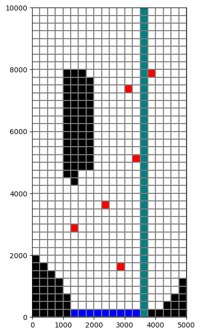
Next we will make a cross-section of the model grid at column 6.
[5]:
# First step is to set up the plot
fig = plt.figure(figsize=(15, 5))
ax = fig.add_subplot(1, 1, 1)
# Next we create an instance of the PlotCrossSection class
xsect = flopy.plot.PlotCrossSection(model=ml, line={"Column": 5})
# Then we can use the plot_grid() method to draw the grid
# The return value for this function is a matplotlib LineCollection object,
# which could be manipulated (or used) later if necessary.
linecollection = xsect.plot_grid()
t = ax.set_title("Column 6 Cross-Section - Model Grid")
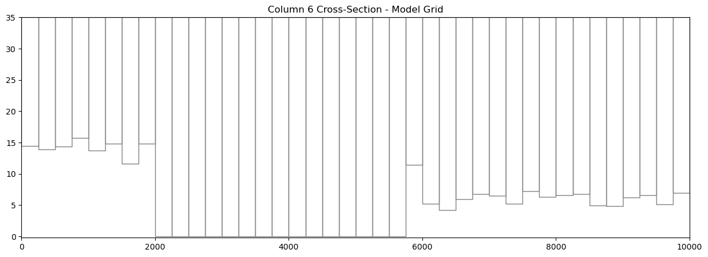
Ploting Ibound
The plot_ibound() method can be used to plot the boundary conditions contained in the ibound arrray, which is part of the MODFLOW Basic Package. The plot_ibound() method returns a matplotlib PatchCollection object (matplotlib.collections.PatchCollection). If you are familiar with the matplotlib collections, then this may be important to you, but if not, then don’t worry about the return objects of these plotting function.
[6]:
fig = plt.figure(figsize=(15, 5))
ax = fig.add_subplot(1, 1, 1)
xsect = flopy.plot.PlotCrossSection(model=ml, line={"Column": 5})
patches = xsect.plot_ibound()
linecollection = xsect.plot_grid()
t = ax.set_title("Column 6 Cross-Section with IBOUND Boundary Conditions")
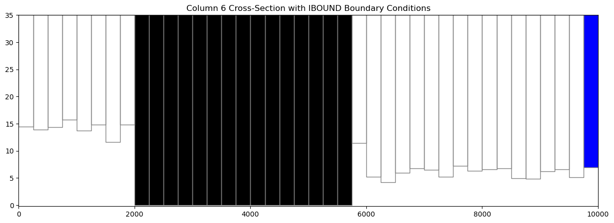
[7]:
# Or we could change the colors!
fig = plt.figure(figsize=(15, 5))
ax = fig.add_subplot(1, 1, 1)
xsect = flopy.plot.PlotCrossSection(model=ml, line={"Column": 5})
patches = xsect.plot_ibound(color_noflow="red", color_ch="orange")
linecollection = xsect.plot_grid(color="green")
t = ax.set_title("Column 6 Cross-Section with IBOUND Boundary Conditions")
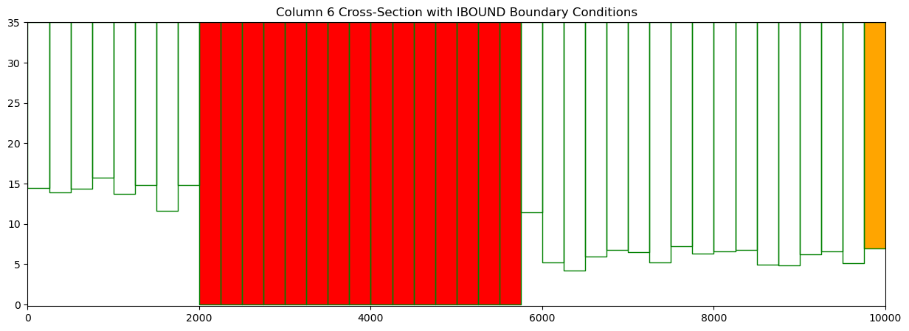
Plotting Boundary Conditions
The plot_bc() method can be used to plot boundary conditions on a cross section. It is setup to use the following dictionary to assign colors, however, these colors can be changed in the method call.
bc_color_dict = {'default': 'black', 'WEL': 'red', 'DRN': 'yellow',
'RIV': 'green', 'GHB': 'cyan', 'CHD': 'navy'}
Just like the plot_bc() method for PlotMapView, the default boundary condition colors can be changed in the method call.
Here, we plot the location of well cells in column 6.
[8]:
fig = plt.figure(figsize=(15, 5))
ax = fig.add_subplot(1, 1, 1)
xsect = flopy.plot.PlotCrossSection(model=ml, line={"Column": 5})
patches = xsect.plot_bc("WEL", color="pink")
patches = xsect.plot_ibound()
linecollection = xsect.plot_grid()
t = ax.set_title("Column 6 Cross-Section with Boundary Conditions")
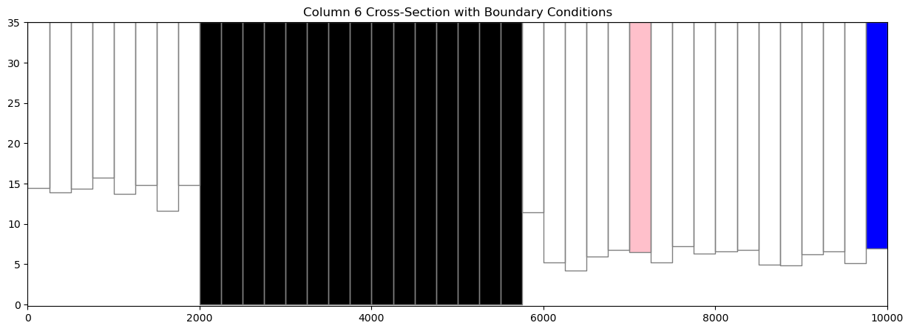
Plotting an Array
PlotCrossSection has a plot_array() method. The plot_array() method will only accept 3D arrays for structured grids.
[9]:
# Create a random array and plot it
a = np.random.random((ml.dis.nlay, ml.dis.nrow, ml.dis.ncol))
fig = plt.figure(figsize=(18, 5))
ax = fig.add_subplot(1, 1, 1)
xsect = flopy.plot.PlotCrossSection(model=ml, line={"Column": 5})
csa = xsect.plot_array(a)
patches = xsect.plot_ibound()
linecollection = xsect.plot_grid()
t = ax.set_title("Column 6 Cross-Section with Random Data")
cb = plt.colorbar(csa, shrink=0.75)
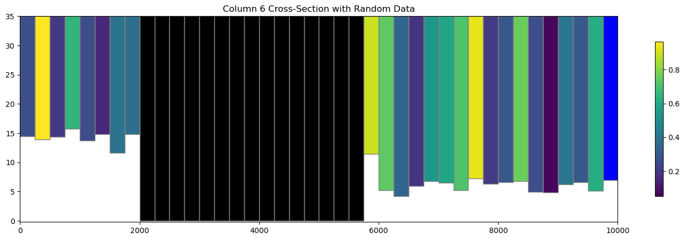
[10]:
# plot the horizontal hydraulic conductivities
a = ml.lpf.hk.array
fig = plt.figure(figsize=(18, 5))
ax = fig.add_subplot(1, 1, 1)
xsect = flopy.plot.PlotCrossSection(model=ml, line={"Column": 5})
csa = xsect.plot_array(a)
patches = xsect.plot_ibound()
linecollection = xsect.plot_grid()
t = ax.set_title(
"Column 6 Cross-Section with Horizontal hydraulic conductivity"
)
cb = plt.colorbar(csa, shrink=0.75)
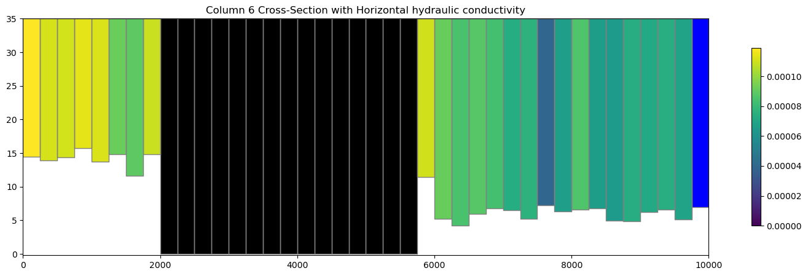
Contouring an Array
PlotCrossSection also has a contour_array() method. It also accepts a 3D array for structured grids.
[11]:
# plot the horizontal hydraulic conductivities
a = ml.lpf.hk.array
fig = plt.figure(figsize=(18, 5))
ax = fig.add_subplot(1, 1, 1)
xsect = flopy.plot.PlotCrossSection(model=ml, line={"Column": 5})
contour_set = xsect.contour_array(a, masked_values=[0], cmap="jet")
patches = xsect.plot_ibound()
linecollection = xsect.plot_grid(color="grey")
t = ax.set_title(
"Column 6 Cross-Section contour_array() horizontal hydraulic conductivity"
)
cb = plt.colorbar(contour_set, shrink=0.75)
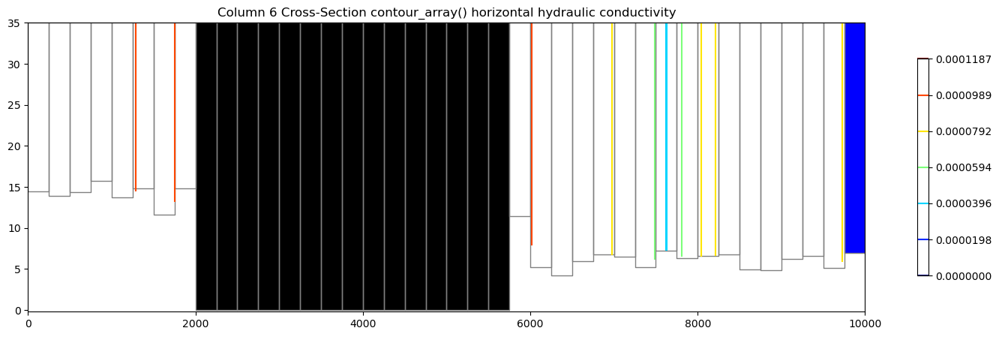
Plotting Heads
We can easily plot results from the simulation by extracting heads using flopy.utils.HeadFile.
The head can be passed into the plot_array() and contour_array() using the head= keyword argument to fix the top of the colored patch and contour lines at the top of the water table in each cell, respectively.
[12]:
fname = os.path.join(str(modelpth), "freyberg.hds")
hdobj = flopy.utils.HeadFile(fname)
head = hdobj.get_data()
fig = plt.figure(figsize=(18, 5))
ax = fig.add_subplot(1, 1, 1)
ax.set_title("plot_array() used to plotting Heads")
xsect = flopy.plot.PlotCrossSection(model=ml, line={"Column": 5})
pc = xsect.plot_array(head, head=head, alpha=0.5)
patches = xsect.plot_ibound(head=head)
linecollection = xsect.plot_grid()
cb = plt.colorbar(pc, shrink=0.75)
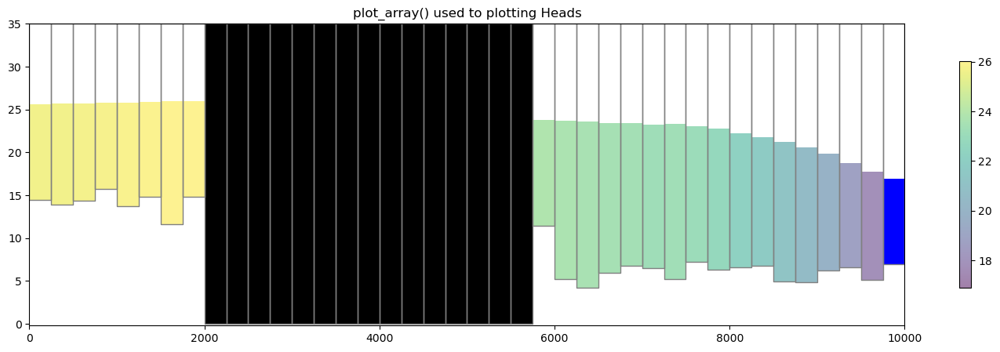
[13]:
# contour array on top of heads
levels = np.arange(17, 26, 1)
fig = plt.figure(figsize=(18, 5))
ax = fig.add_subplot(1, 1, 1)
ax.set_title("contour_array() and plot_array() of head values")
# instantiate the PlotCrossSection object
xsect = flopy.plot.PlotCrossSection(model=ml, line={"Column": 5})
# plot the head array and model grid
pc = xsect.plot_array(head, masked_values=[999.0], head=head, alpha=0.5)
patches = xsect.plot_ibound(head=head)
linecollection = xsect.plot_grid()
# do black contour lines of the head array
contour_set = xsect.contour_array(head, head=head, levels=levels, colors="k")
plt.clabel(contour_set, fmt="%.1f", colors="k", fontsize=11)
cb = plt.colorbar(pc, shrink=0.75)
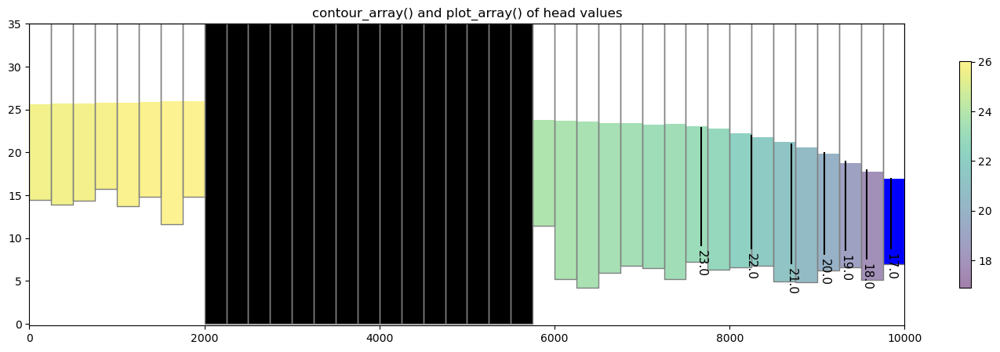
Plotting a surface on the cross section
The plot_surface() method allows the user to plot a surface along the cross section. Here is a short example using head data.
[14]:
levels = np.arange(10, 30, 0.5)
fig = plt.figure(figsize=(18, 5))
xsect = flopy.plot.PlotCrossSection(model=ml, line={"Column": 5})
# contour array and plot ibound
ct = xsect.contour_array(
head, masked_values=[999.0], head=head, levels=levels, linewidths=2.5
)
pc = xsect.plot_ibound(head=head)
# plot the surface and model grid
wt = xsect.plot_surface(head, color="blue", lw=2.5)
linecollection = xsect.plot_grid()
plt.title("contour_array() and plot_surface()")
cb = plt.colorbar(ct, shrink=0.75)
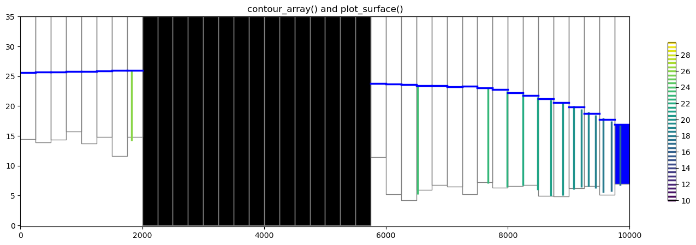
Plotting discharge vectors
PlotCrossSection has a plot_vector() method, which takes qx, qy, and qz vector arrays (ex. specific discharge or flow across a cell faces). The flow array values can be extracted from the cell by cell flow file using the flopy.utils.CellBudgetFile object as shown below. Once they are extracted, they either be can be passed to the plot_vector() method or they can be post processed into specific discharge using postprocessing.get_specific_discharge. Note that
get_specific_discharge() also takes the head array as an argument. The head array is used by get_specific_discharge() to convert the volumetric flow in dimensions of \(L^3/T\) to specific discharge in dimensions of \(L/T\) and to plot the specific discharge in the center of each saturated cell. For this problem, there is no ‘FLOW LOWER FACE’ array since the Freyberg Model is a one layer model.
[15]:
fname = os.path.join(str(modelpth), "freyberg.cbc")
cbb = flopy.utils.CellBudgetFile(fname)
frf = cbb.get_data(text="FLOW RIGHT FACE")[0]
fff = cbb.get_data(text="FLOW FRONT FACE")[0]
qx, qy, qz = flopy.utils.postprocessing.get_specific_discharge(
(frf, fff, None), ml, head=head
)
[16]:
fig = plt.figure(figsize=(18, 5))
ax = fig.add_subplot(1, 1, 1)
ax.set_title("plot_array() and plot_vector()")
xsect = flopy.plot.PlotCrossSection(model=ml, ax=ax, line={"Column": 5})
csa = xsect.plot_array(head, head=head, alpha=0.5)
patches = xsect.plot_ibound(head=head)
linecollection = xsect.plot_grid()
quiver = xsect.plot_vector(
qx,
qy,
qz,
head=head,
hstep=2,
normalize=True,
color="green",
scale=30,
headwidth=3,
headlength=3,
headaxislength=3,
zorder=10,
)
cb = plt.colorbar(csa, shrink=0.75)
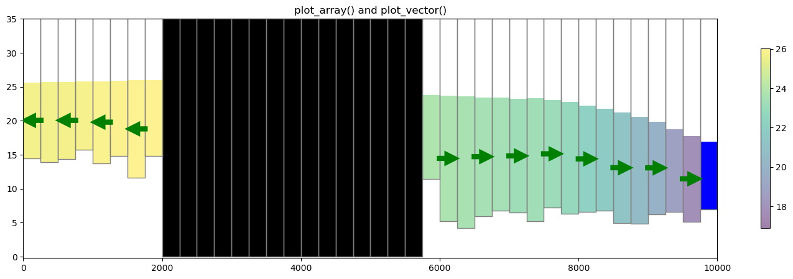
Plotting a cross section from Shapefile data
A shapefile can be used to define the vertices for a instance of the PlotCrossSection class. The function flopy.plot.plotutil.shapefile_get_vertices() will return a list of vertices for each polyline in a shapefile.
Let’s plot the shapefiles and the Freyberg model using PlotMapView for visualization purposes and then plot the cross-section.
[17]:
# Setup the figure and PlotMapView. Show a very faint map of ibound and
# model grid by specifying a transparency alpha value.
# set the modelgrid rotation and offset
ml.modelgrid.set_coord_info(
xoff=-2419.2189559966773, yoff=297.0427372400354, angrot=-14
)
fig = plt.figure(figsize=(12, 12))
ax = fig.add_subplot(1, 1, 1, aspect="equal")
mapview = flopy.plot.PlotMapView(model=ml)
# Plot a shapefile of
shp = os.path.join(loadpth, "gis", "bedrock_outcrop_hole_rotate14")
patch_collection = mapview.plot_shapefile(
shp, edgecolor="green", linewidths=2, alpha=0.5 # facecolor='none',
)
# Plot a shapefile of a cross-section line
shp = os.path.join(loadpth, "gis", "cross_section_rotate14")
patch_collection = mapview.plot_shapefile(
shp, radius=0, lw=3, edgecolor="red", facecolor="None"
)
# Plot a shapefile of well locations
shp = os.path.join(loadpth, "gis", "wells_locations_rotate14")
patch_collection = mapview.plot_shapefile(shp, radius=100, facecolor="red")
# Plot the grid and boundary conditions over the top
quadmesh = mapview.plot_ibound(alpha=0.1)
linecollection = mapview.plot_grid(alpha=0.1);
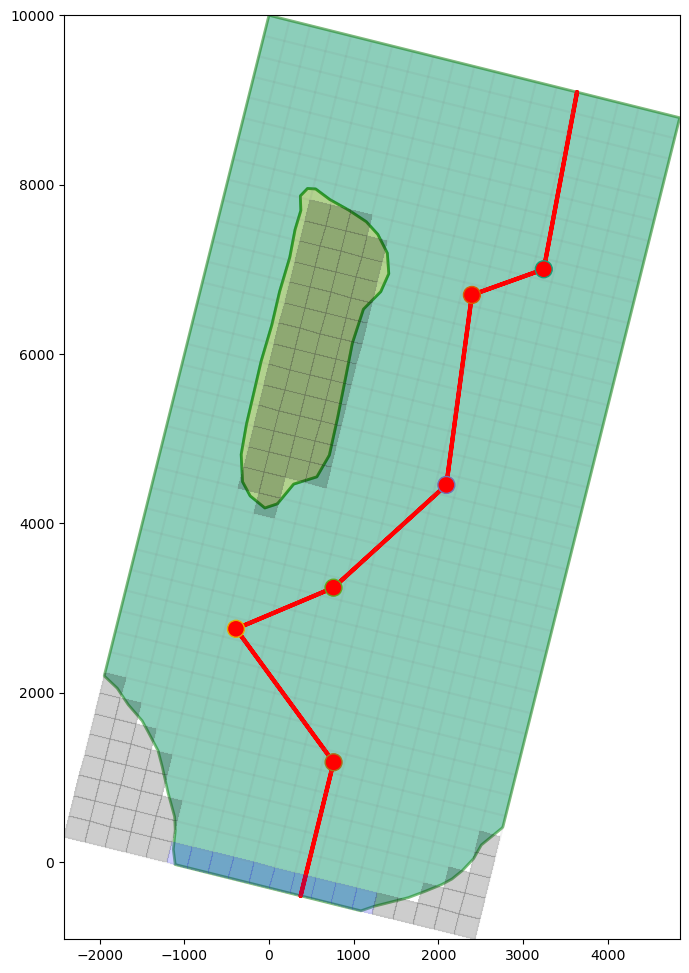
Now let’s make a cross section based on this arbitrary cross-sectional line. We can load the cross sectional line vertices using flopy.plot.plotutil.shapefile_get_vertices()
Note: in previous examples we passed line={'column', 5} to plot a cross section along a column. In this example we pass vertex information into PlotCrossSection using line={'line', line[0]} where line[0] is a list of vertices.
[18]:
# get the vertices for cross-section lines in a shapefile
fpth = os.path.join(loadpth, "gis", "cross_section_rotate14")
line = flopy.plot.plotutil.shapefile_get_vertices(fpth)
# Set up the figure
fig = plt.figure(figsize=(18, 5))
ax = fig.add_subplot(1, 1, 1)
ax.set_title("plot_array() along an arbitrary cross-sectional line")
# plot head values along the cross sectional line
xsect = flopy.plot.PlotCrossSection(model=ml, line={"line": line[0]})
csa = xsect.plot_array(head, head=head, alpha=0.5)
patches = xsect.plot_ibound(head=head)
linecollection = xsect.plot_grid(lw=0.5)
cb = fig.colorbar(csa, ax=ax, shrink=0.5)
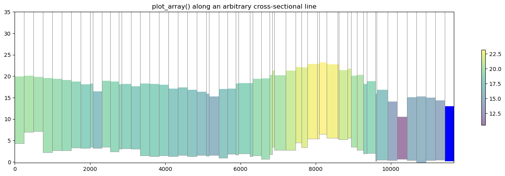
Plotting geographic coordinates on the x-axis using the PlotCrossSection class
The default cross section plotting method plots cells with regard to their intersection distance along the cross sectional line defined by the user. While this method is perfectly acceptable and in many cases may be preferred for plotting arbitrary cross sections, a flag has been added to plot based on geographic coordinates.
The flag geographic_coords defaults to False which maintains FloPy’s previous method of plotting cross sections.
[19]:
# get the vertices for cross-section lines in a shapefile
fpth = os.path.join(loadpth, "gis", "cross_section_rotate14")
line = flopy.plot.plotutil.shapefile_get_vertices(fpth)
# Set up the figure
fig = plt.figure(figsize=(18, 5))
ax = fig.add_subplot(1, 1, 1)
ax.set_title("plot_array() along an arbitrary cross-sectional line")
# plot head values along the cross sectional line
xsect = flopy.plot.PlotCrossSection(
model=ml, line={"line": line[0]}, geographic_coords=True
)
csa = xsect.plot_array(head, head=head, alpha=0.5)
patches = xsect.plot_ibound(head=head)
linecollection = xsect.plot_grid(lw=0.5)
cb = fig.colorbar(csa, ax=ax, shrink=0.5)
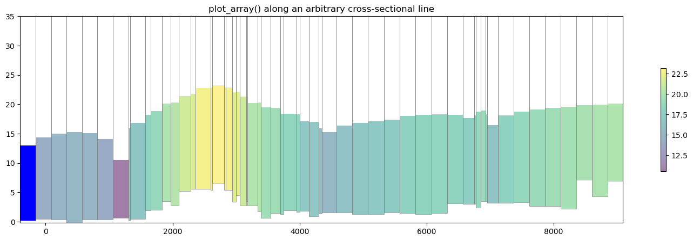
Plotting Cross Sections with MODFLOW-6 models
PlotCrossSection has support for MODFLOW-6 models and operates in the same fashion for Structured Grids, Vertex Grids, and Unstructured Grids. Here is a short example on how to plot with MODFLOW-6 structured grids using a version of the Freyberg model created for MODFLOW-6|
[20]:
# load the Freyberg model into mf6-flopy and run the simulation
sim_name = "mfsim.nam"
sim_path = str(prj_root / "examples" / "data" / "mf6-freyberg")
sim = flopy.mf6.MFSimulation.load(
sim_name=sim_name, version=vmf6, exe_name=exe_name_mf6, sim_ws=sim_path
)
sim.set_sim_path(modelpth)
sim.write_simulation()
success, buff = sim.run_simulation(silent=True, report=True)
if success:
for line in buff:
print(line)
else:
raise ValueError("Something bad happened.")
files = ["freyberg.hds", "freyberg.cbc"]
for f in files:
if os.path.isfile(os.path.join(str(modelpth), f)):
msg = "Output file located: {}".format(f)
print(msg)
else:
errmsg = "Error. Output file cannot be found: {}".format(f)
print(errmsg)
loading simulation...
loading simulation name file...
loading tdis package...
loading model gwf6...
loading package dis...
loading package ic...
WARNING: Block "options" is not a valid block name for file type ic.
loading package oc...
loading package npf...
loading package sto...
loading package chd...
loading package riv...
loading package wel...
loading package rch...
loading solution package freyberg...
writing simulation...
writing simulation name file...
writing simulation tdis package...
writing solution package freyberg...
writing model freyberg...
writing model name file...
writing package dis...
writing package ic...
writing package oc...
writing package npf...
writing package sto...
writing package chd_0...
writing package riv_0...
writing package wel_0...
writing package rch_0...
MODFLOW 6
U.S. GEOLOGICAL SURVEY MODULAR HYDROLOGIC MODEL
VERSION 6.4.1 Release 12/09/2022
MODFLOW 6 compiled Apr 12 2023 19:02:29 with Intel(R) Fortran Intel(R) 64
Compiler Classic for applications running on Intel(R) 64, Version 2021.7.0
Build 20220726_000000
This software has been approved for release by the U.S. Geological
Survey (USGS). Although the software has been subjected to rigorous
review, the USGS reserves the right to update the software as needed
pursuant to further analysis and review. No warranty, expressed or
implied, is made by the USGS or the U.S. Government as to the
functionality of the software and related material nor shall the
fact of release constitute any such warranty. Furthermore, the
software is released on condition that neither the USGS nor the U.S.
Government shall be held liable for any damages resulting from its
authorized or unauthorized use. Also refer to the USGS Water
Resources Software User Rights Notice for complete use, copyright,
and distribution information.
Run start date and time (yyyy/mm/dd hh:mm:ss): 2023/05/04 15:51:45
Writing simulation list file: mfsim.lst
Using Simulation name file: mfsim.nam
Solving: Stress period: 1 Time step: 1
Run end date and time (yyyy/mm/dd hh:mm:ss): 2023/05/04 15:51:46
Elapsed run time: 0.060 Seconds
Normal termination of simulation.
Output file located: freyberg.hds
Output file located: freyberg.cbc
Plotting boundary conditions and arrays
This works the same as modflow-2005, however the simulation object can host a number of modflow-6 models so we need to grab a model before attempting to plot with PlotCrossSection
[21]:
# get the modflow-6 model we want to plot
ml6 = sim.get_model("freyberg")
fig = plt.figure(figsize=(15, 10))
ax = fig.add_subplot(2, 1, 1)
# plot boundary conditions
xsect = flopy.plot.PlotCrossSection(model=ml6, line={"Column": 5})
patches = xsect.plot_bc("WEL_0", color="pink")
patches = xsect.plot_ibound()
linecollection = xsect.plot_grid()
t = ax.set_title("Column 6 Cross-Section with Boundary Conditions")
# plot xxxx
ax = fig.add_subplot(2, 1, 2)
# plot the horizontal hydraulic conductivities
a = ml6.npf.k.array
xsect = flopy.plot.PlotCrossSection(model=ml6, line={"Column": 5})
csa = xsect.plot_array(a)
patches = xsect.plot_ibound()
linecollection = xsect.plot_grid()
t = ax.set_title(
"Column 6 Cross-Section with Horizontal hydraulic conductivity"
)
cb = plt.colorbar(csa, shrink=0.75)
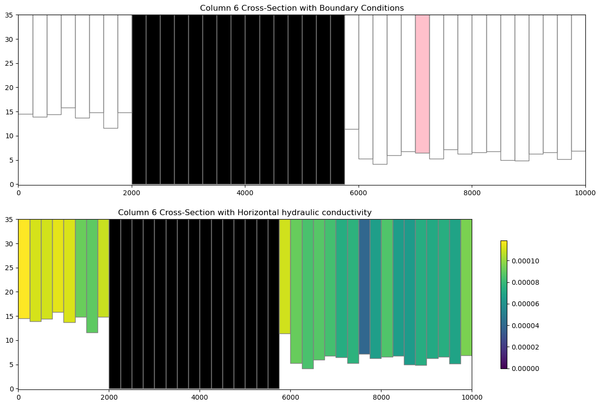
Plotting specific discharge with a MODFLOW-6 model
MODFLOW-6 includes a the PLOT_SPECIFIC_DISCHARGE flag in the NPF package to calculate and store discharge vectors for easy plotting. The postprocessing.get_specific_discharge() method will preprocess the data into vectors and PlotCrossSection has the plot_vector() method to use this data. The specific discharge array is stored in the cell budget file.
[22]:
# get the head from the head file
head_file = os.path.join(modelpth, "freyberg.hds")
hds = flopy.utils.HeadFile(head_file)
head = hds.get_alldata()[0]
# get the specific discharge from the cell budget file
cbc_file = os.path.join(modelpth, "freyberg.cbc")
cbc = flopy.utils.CellBudgetFile(cbc_file, precision="double")
spdis = cbc.get_data(text="SPDIS")[-1]
qx, qy, qz = flopy.utils.postprocessing.get_specific_discharge(
spdis, ml6, head=head
)
fig = plt.figure(figsize=(18, 5))
ax = fig.add_subplot(1, 1, 1)
ax.set_title("plot_array() and plot_vector()")
xsect = flopy.plot.PlotCrossSection(model=ml6, ax=ax, line={"Column": 5})
csa = xsect.plot_array(head, head=head, alpha=0.5)
patches = xsect.plot_ibound(head=head)
linecollection = xsect.plot_grid()
quiver = xsect.plot_vector(
qx,
qy,
qz,
head=head,
hstep=2,
normalize=True,
color="green",
scale=30,
headwidth=3,
headlength=3,
headaxislength=3,
zorder=10,
)
cb = plt.colorbar(csa, shrink=0.75)
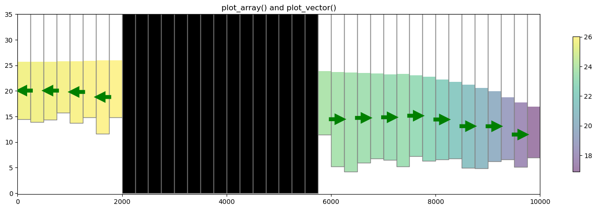
Vertex cross section plotting with MODFLOW-6 (DISV)
FloPy fully supports vertex discretization (DISV) plotting through the PlotCrossSection class. The method calls are identical to the ones presented previously for Structured discretization (DIS) and the same matplotlib keyword arguments are supported. Let’s run through an example using a vertex model grid.
[23]:
# build and run vertex model grid demo problem
notebook_utils.run(modelpth)
# check if model ran properly
modelpth = os.path.join(modelpth, "mp7_ex2", "mf6")
# from pprint import pprint
# pprint([str(p) for p in (Path(tempdir.name) / "mp7_ex2").glob('*')])
files = ["mp7p2.hds", "mp7p2.cbb"]
for f in files:
if os.path.isfile(os.path.join(modelpth, f)):
msg = "Output file located: {}".format(f)
print(msg)
else:
errmsg = "Error. Output file cannot be found: {}".format(f)
print(errmsg)
WARNING: Unable to resolve dimension of ('gwf6', 'disv', 'cell2d', 'cell2d', 'icvert') based on shape "ncvert".
writing simulation...
writing simulation name file...
writing simulation tdis package...
writing solution package ims...
writing model mp7p2...
writing model name file...
writing package disv...
writing package ic...
writing package npf...
writing package wel_0...
INFORMATION: maxbound in ('gwf6', 'wel', 'dimensions') changed to 1 based on size of stress_period_data
writing package rcha_0...
writing package riv_0...
INFORMATION: maxbound in ('gwf6', 'riv', 'dimensions') changed to 21 based on size of stress_period_data
writing package oc...
MODFLOW 6
U.S. GEOLOGICAL SURVEY MODULAR HYDROLOGIC MODEL
VERSION 6.4.1 Release 12/09/2022
MODFLOW 6 compiled Apr 12 2023 19:02:29 with Intel(R) Fortran Intel(R) 64
Compiler Classic for applications running on Intel(R) 64, Version 2021.7.0
Build 20220726_000000
This software has been approved for release by the U.S. Geological
Survey (USGS). Although the software has been subjected to rigorous
review, the USGS reserves the right to update the software as needed
pursuant to further analysis and review. No warranty, expressed or
implied, is made by the USGS or the U.S. Government as to the
functionality of the software and related material nor shall the
fact of release constitute any such warranty. Furthermore, the
software is released on condition that neither the USGS nor the U.S.
Government shall be held liable for any damages resulting from its
authorized or unauthorized use. Also refer to the USGS Water
Resources Software User Rights Notice for complete use, copyright,
and distribution information.
Run start date and time (yyyy/mm/dd hh:mm:ss): 2023/05/04 15:51:47
Writing simulation list file: mfsim.lst
Using Simulation name file: mfsim.nam
Solving: Stress period: 1 Time step: 1
Run end date and time (yyyy/mm/dd hh:mm:ss): 2023/05/04 15:51:47
Elapsed run time: 0.129 Seconds
WARNING REPORT:
1. NONLINEAR BLOCK VARIABLE 'OUTER_HCLOSE' IN FILE 'mp7p2.ims' WAS
DEPRECATED IN VERSION 6.1.1. SETTING OUTER_DVCLOSE TO OUTER_HCLOSE VALUE.
2. LINEAR BLOCK VARIABLE 'INNER_HCLOSE' IN FILE 'mp7p2.ims' WAS DEPRECATED
IN VERSION 6.1.1. SETTING INNER_DVCLOSE TO INNER_HCLOSE VALUE.
Normal termination of simulation.
MODPATH Version 7.2.001
Program compiled Apr 12 2023 19:05:18 with IFORT compiler (ver. 20.21.7)
Run particle tracking simulation ...
Processing Time Step 1 Period 1. Time = 1.00000E+03 Steady-state flow
Particle Summary:
0 particles are pending release.
0 particles remain active.
16 particles terminated at boundary faces.
0 particles terminated at weak sink cells.
0 particles terminated at weak source cells.
0 particles terminated at strong source/sink cells.
0 particles terminated in cells with a specified zone number.
0 particles were stranded in inactive or dry cells.
0 particles were unreleased.
0 particles have an unknown status.
Normal termination.
MODPATH Version 7.2.001
Program compiled Apr 12 2023 19:05:18 with IFORT compiler (ver. 20.21.7)
Run particle tracking simulation ...
Processing Time Step 1 Period 1. Time = 1.00000E+03 Steady-state flow
Particle Summary:
0 particles are pending release.
0 particles remain active.
416 particles terminated at boundary faces.
0 particles terminated at weak sink cells.
0 particles terminated at weak source cells.
0 particles terminated at strong source/sink cells.
0 particles terminated in cells with a specified zone number.
0 particles were stranded in inactive or dry cells.
0 particles were unreleased.
0 particles have an unknown status.
Normal termination.
Output file located: mp7p2.hds
Output file located: mp7p2.cbb
[24]:
# load the simulation and get the model
vertex_sim_name = "mfsim.nam"
vertex_sim = flopy.mf6.MFSimulation.load(
sim_name=vertex_sim_name,
version=vmf6,
exe_name=exe_name_mf6,
sim_ws=modelpth,
)
vertex_ml6 = vertex_sim.get_model("mp7p2")
loading simulation...
loading simulation name file...
loading tdis package...
loading model gwf6...
loading package disv...
WARNING: Unable to resolve dimension of ('gwf6', 'disv', 'cell2d', 'cell2d', 'icvert') based on shape "ncvert".
loading package ic...
loading package npf...
loading package wel...
loading package rch...
loading package riv...
loading package oc...
loading solution package mp7p2...
Plotting a line based cross section through the model grid
Because a VertexGrid has no row or column number, the cross-section line must be defined explicitly. This is done by passing a dictionary to the line parameter with key line — the value may be an array-like of 2 or more points, e.g. {"line": [(x0, y0), (x1, y1), ...]}, or a flopy.utils.geometry.LineString or shapely.geometry.LineString. Below we show an example of setting up a cross-section line with a MODFLOW-6 DISV model.
[25]:
line = np.array([(4700, 0), (4700, 5000), (7250, 10500)])
# Let's plot the model grid in map view to look at it
fig = plt.figure(figsize=(12, 12))
ax = fig.add_subplot(1, 1, 1, aspect="equal")
ax.set_title("Vertex Model Grid (DISV) with cross sectional line")
# use PlotMapView to plot a DISV (vertex) model
mapview = flopy.plot.PlotMapView(vertex_ml6, layer=0)
linecollection = mapview.plot_grid()
# plot the line over the model grid
lc = plt.plot(line.T[0], line.T[1], "r--", lw=2)
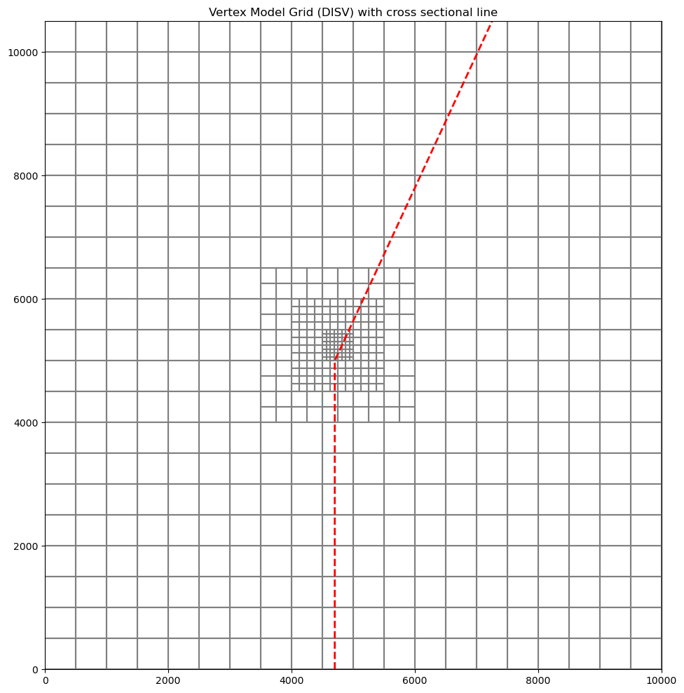
Now we can plot a cross section of the model grid defined by this line
[26]:
fig = plt.figure(figsize=(15, 5))
ax = fig.add_subplot(1, 1, 1)
# Next we create an instance of the PlotCrossSection class
xsect = flopy.plot.PlotCrossSection(model=vertex_ml6, line={"line": line})
# Then we can use the plot_grid() method to draw the grid
# The return value for this function is a matplotlib LineCollection object,
# which could be manipulated (or used) later if necessary.
linecollection = xsect.plot_grid()
t = ax.set_title("Column 6 Cross-Section - Model Grid")
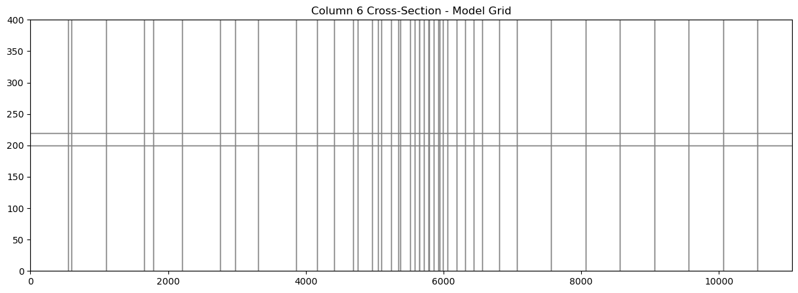
Plotting Arrays and Contouring with Vertex Model grids
PlotCrossSection allows the user to plot arrays and contour with DISV based discretization. The plot_array() method is called in the same way as using a structured grid. The only difference is that PlotCrossSection builds a matplotlib patch collection for Vertex based grids.
[27]:
# get the head output for stress period 1 from the modflow6 head file
head = flopy.utils.HeadFile(os.path.join(modelpth, "mp7p2.hds"))
hdata = head.get_alldata()[0, :, :, :]
fig = plt.figure(figsize=(18, 5))
ax = fig.add_subplot(1, 1, 1)
ax.set_title("plot_array()")
xsect = flopy.plot.PlotCrossSection(model=vertex_ml6, line={"line": line})
patch_collection = xsect.plot_array(hdata, head=hdata, alpha=0.5)
line_collection = xsect.plot_grid()
cb = plt.colorbar(patch_collection, shrink=0.75)
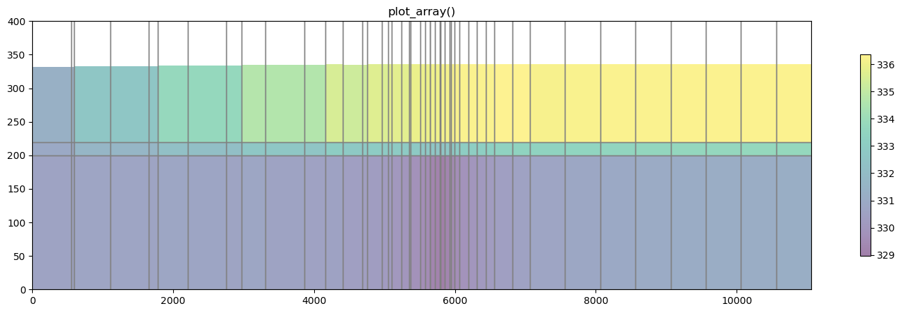
The contour_array() method operates in the same way as the sturctured example.
[28]:
levels = np.arange(329, 337, 1)
fig = plt.figure(figsize=(18, 5))
ax = fig.add_subplot(1, 1, 1)
ax.set_title("contour_array() with a multi-layer vertex model")
xsect = flopy.plot.PlotCrossSection(model=vertex_ml6, line={"line": line})
patch_collection = xsect.plot_array(hdata, head=hdata, alpha=0.5)
line_collection = xsect.plot_grid()
contour_set = xsect.contour_array(hdata, levels=levels, colors="k")
plt.clabel(contour_set, fmt="%.1f", colors="k", fontsize=11)
cb = plt.colorbar(patch_collection, shrink=0.75)
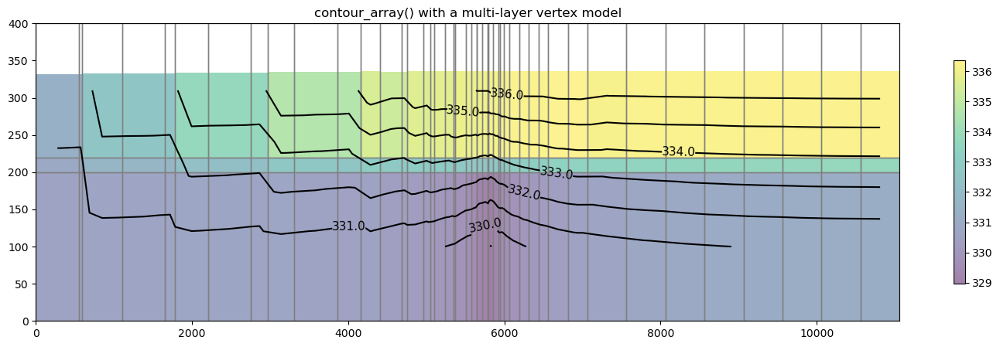
Plotting specific discharge vectors for DISV
MODFLOW-6 includes a the PLOT_SPECIFIC_DISCHARGE flag in the NPF package to calculate and store discharge vectors for easy plotting.The postprocessing.get_specific_discharge() method will preprocess the data into vectors and PlotCrossSection has the plot_vector() method to use this data. The specific discharge array is stored in the cell budget file.
Note: When plotting specific discharge, an arbitrary cross section cannot be used. The cross sectional line must be orthogonal to the model grid
[29]:
# define and plot our orthogonal line
line = np.array([(0, 4700), (10000, 4700)])
# Let's plot the model grid in map view to look at it
fig = plt.figure(figsize=(12, 12))
ax = fig.add_subplot(1, 1, 1, aspect="equal")
ax.set_title("Vertex Model Grid (DISV) with cross sectional line")
# use PlotMapView to plot a DISV (vertex) model
mapview = flopy.plot.PlotMapView(vertex_ml6, layer=0)
linecollection = mapview.plot_grid()
# plot the line over the model grid
lc = plt.plot(line.T[0], line.T[1], "r--", lw=2)
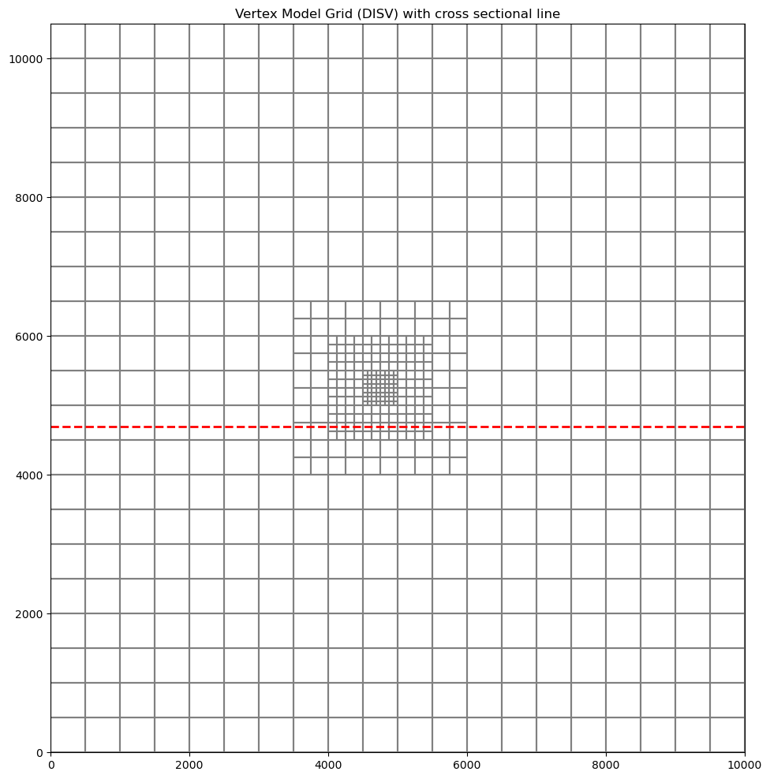
[30]:
# plot specific discharge on cross section
cbb = flopy.utils.CellBudgetFile(os.path.join(modelpth, "mp7p2.cbb"))
spdis = cbb.get_data(text="SPDIS")[-1]
qx, qy, qz = flopy.utils.postprocessing.get_specific_discharge(
spdis, vertex_ml6, head=hdata
)
fig = plt.figure(figsize=(18, 5))
ax = fig.add_subplot(1, 1, 1)
xsect = flopy.plot.PlotCrossSection(model=vertex_ml6, line={"line": line})
patch_collection = xsect.plot_array(hdata, head=hdata, alpha=0.5)
line_collection = xsect.plot_grid()
quiver = xsect.plot_vector(
qx,
qy,
qz,
head=hdata,
hstep=3,
normalize=True,
color="green",
scale=30,
headwidth=3,
headlength=3,
headaxislength=3,
zorder=10,
)
cb = plt.colorbar(patch_collection, shrink=0.75)
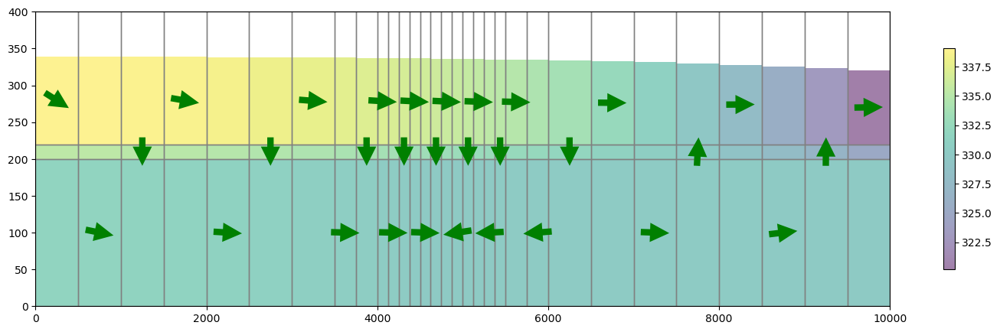
Plotting using built in styles
FloPy’s plotting routines can be used with built in styles from the styles module. The styles module takes advantage of matplotlib’s temporary styling routines by reading in pre-built style sheets. Two different types of styles have been built for flopy: USGSMap() and USGSPlot() styles which can be used to create report quality figures. The styles module also contains a number of methods that can be used for adding axis labels, text, annotations, headings, removing tick lines,
and updating the current font.
This example will load the Keating groundwater transport model and plot results using styles
[31]:
notebook_utils.run_keating_model(modelpth)
Running mf6gwf model...
Running mf6gwt model...
[31]:
True
Load the flow and transport models
[32]:
sim_path = os.path.join(modelpth, "mf6-gwt-keating", "mf6gwf")
tr_path = os.path.join(modelpth, "mf6-gwt-keating", "mf6gwt")
sim_name = "mfsim.nam"
sim = flopy.mf6.MFSimulation.load(
sim_name=sim_name, version=vmf6, exe_name=exe_name_mf6, sim_ws=sim_path
)
gwf6 = sim.get_model("flow")
sim = flopy.mf6.MFSimulation.load(
sim_name=sim_name, version=vmf6, exe_name=exe_name_mf6, sim_ws=tr_path
)
gwt6 = sim.get_model("trans")
loading simulation...
loading simulation name file...
loading tdis package...
loading model gwf6...
loading package dis...
loading package npf...
loading package ic...
loading package chd...
loading package rch...
loading package oc...
loading solution package flow...
loading simulation...
loading simulation name file...
loading tdis package...
loading model gwt6...
loading package dis...
loading package ic...
loading package mst...
loading package adv...
loading package dsp...
loading package fmi...
loading package ssm...
loading package oc...
loading package obs...
loading solution package trans...
[33]:
# import styles
from flopy.plot import styles
# load head file and plot
head = gwf6.output.head().get_data()
with styles.USGSMap():
fig, ax = plt.subplots(1, 1, figsize=(12, 8), dpi=300, tight_layout=True)
xsect = flopy.plot.PlotCrossSection(model=gwf6, ax=ax, line={"row": 0})
pc = xsect.plot_array(head, head=head, cmap="jet")
xsect.plot_bc(ftype="RCH", color="red")
xsect.plot_bc(ftype="CHD")
plt.colorbar(pc, shrink=0.25)
# add a rectangle to show the confining layer
confining_rect = mpl.patches.Rectangle(
(3000, 1000), 3000, 100, color="gray", alpha=0.5
)
ax.add_patch(confining_rect)
# set labels using styles
styles.xlabel(label="x-position (m)")
styles.ylabel(label="elevation (m)")
styles.heading(
letter="A.", heading="Simulated hydraulic head", fontsize=10
)
ax.set_aspect(1.0)
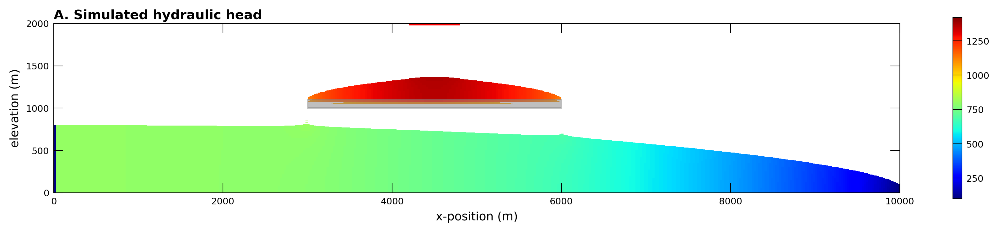
Plotting concentration model results using the USGSMap() style
[34]:
# load the transport output file
cobj = gwt6.output.concentration()
plot_times = [100, 1000, 3000]
obs1 = (48, 0, 118) # Layer, row, and column for observation 1
obs2 = (76, 0, 358) # Layer, row, and column for observation 2
xgrid, _, zgrid = gwf6.modelgrid.xyzcellcenters
with styles.USGSPlot():
fig, axes = plt.subplots(3, 1, figsize=(15, 9), tight_layout=True)
for ix, totim in enumerate(plot_times):
heading = "Time = {}".format(totim)
conc = cobj.get_data(totim=totim)
ax = axes[ix]
xsect = flopy.plot.PlotCrossSection(model=gwf6, ax=ax, line={"row": 0})
pc = xsect.plot_array(conc, head=head, cmap="jet", vmin=0, vmax=1)
xsect.plot_bc(ftype="RCH", color="red")
xsect.plot_bc(ftype="CHD")
# plot confining layer
confining_rect = mpl.patches.Rectangle(
(3000, 1000), 3000, 100, color="gray", alpha=0.5
)
ax.add_patch(confining_rect)
# set axis labels and title using styles
styles.ylabel(ax=ax, label="elevation (m)", fontsize=10)
if ix == 2:
styles.xlabel(ax=ax, label="x-position (m)", fontsize=10)
styles.heading(ax=ax, heading=heading, idx=ix, fontsize=12)
ax.set_aspect(1.0)
# add observation locations based on grid cell centers
for k, i, j in [obs1, obs2]:
x = xgrid[i, j]
z = zgrid[k, i, j]
ax.plot(x, z, mfc="yellow", mec="black", marker="o", ms="8")

Summary
This notebook demonstrates some of the plotting functionality available with flopy. Although not described here, the plotting functionality tries to be general by passing keyword arguments passed to the PlotCrossSection methods down into the matplotlib.pyplot routines that do the actual plotting. For those looking to customize these plots, it may be necessary to search for the available keywords by understanding the types of objects that are created by the PlotCrossSection methods.
The PlotCrossSection methods return these matplotlib.collections objects so that they could be fine-tuned later in the script before plotting.
Hope this gets you started!
[35]:
try:
# ignore PermissionError on Windows
tempdir.cleanup()
except:
pass